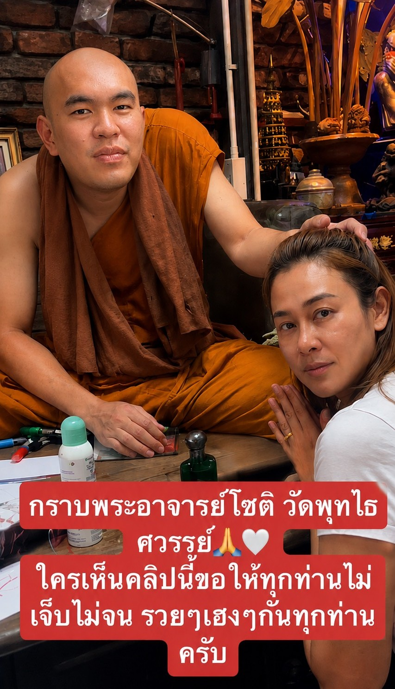
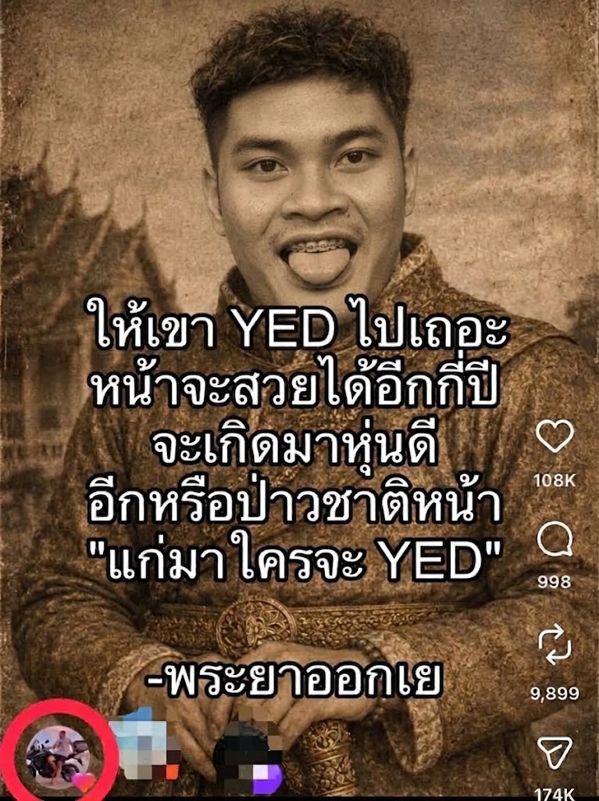
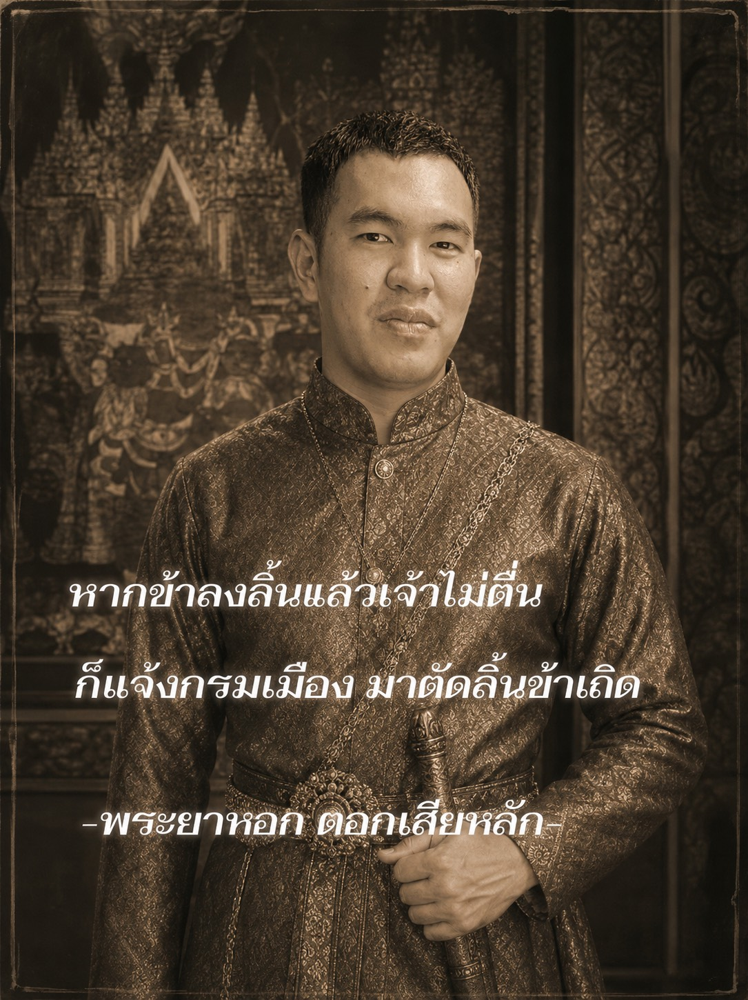
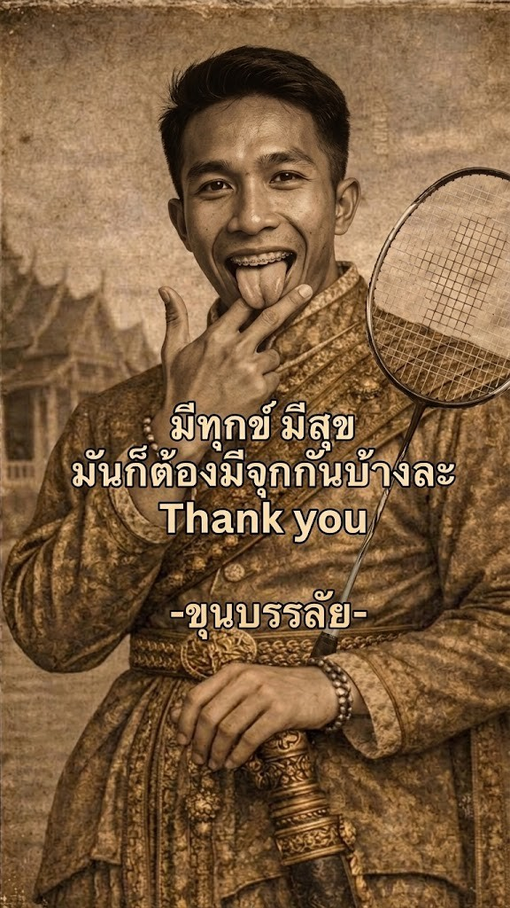
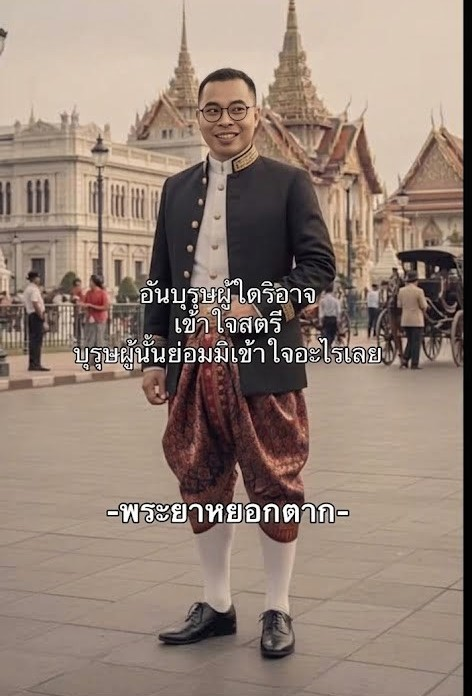

ความเป็นมา
วันหนึ่ง เจ้าพระยาทั้ง ๔ นั่งคุยกันในเรือน
เจ้าพระยาคนที่หนึ่งพูดว่า
“พวกเราก็มีทั้งเงินทอง ยศศักดิ์ แต่เหตุใดยังไม่มีเมียกันสักคน?”
เจ้าพระยาคนที่สองตอบว่า
“จริง! เช่นนั้นพรุ่งนี้เราออกตามหาเมียกันเถิด”
วันรุ่งขึ้น เจ้าพระยาทั้ง ๔ จึงแต่งตัวหล่อ ออกเดินทางไปตามตลาดและงานวัด หวังจะพบหญิงที่ถูกใจ
แต่เดินหาทั้งวันก็ไม่พบสักคน
จนเจ้าพระยาคนที่สี่พูดขึ้นว่า
“ข้าว่าเราไม่ได้หาเมียหรอก…”
ทั้งสามถามพร้อมกัน
“แล้วเราหาอะไร?”
เจ้าพระยาคนที่สี่ตอบ
“เรากำลังหาคนที่ยอมแต่งกับเราอยู่ต่างหาก!”
ทั้งสี่มองหน้ากัน แล้วถอนหายใจพร้อมกัน 😂
เจ้าพระยาคนที่หนึ่งพูดว่า
“พวกเราก็มีทั้งเงินทอง ยศศักดิ์ แต่เหตุใดยังไม่มีเมียกันสักคน?”
เจ้าพระยาคนที่สองตอบว่า
“จริง! เช่นนั้นพรุ่งนี้เราออกตามหาเมียกันเถิด”
วันรุ่งขึ้น เจ้าพระยาทั้ง ๔ จึงแต่งตัวหล่อ ออกเดินทางไปตามตลาดและงานวัด หวังจะพบหญิงที่ถูกใจ
แต่เดินหาทั้งวันก็ไม่พบสักคน
จนเจ้าพระยาคนที่สี่พูดขึ้นว่า
“ข้าว่าเราไม่ได้หาเมียหรอก…”
ทั้งสามถามพร้อมกัน
“แล้วเราหาอะไร?”
เจ้าพระยาคนที่สี่ตอบ
“เรากำลังหาคนที่ยอมแต่งกับเราอยู่ต่างหาก!”
ทั้งสี่มองหน้ากัน แล้วถอนหายใจพร้อมกัน 😂
ภาพประวัติศาสตร์

หัวแถว

เจ้าพระยาออกเย

พระยาหอก ตอกเสียหลัก

ขุนบรรลัย

พระยาหยอกตาก
เหตุการณ์สำคัญ
- เจ้าพระยาออกเย -
ออกเดินทางตามหาเมีย
- พระยาหอก ตอกเสียหลัก -
ออกตามหาเมียจนเกือบเสียหลัก
- ขุนบรรลัย -
ผู้ร่วมเดินทางตามหาเนื้อคู่
- พระยาหยอกตาก -
ผู้คิดแผนการออกตามหาเมีย
- เจ้าพระยาคนที่ 5 -
ผู้มาสมทบในการออกตามหาเมีย